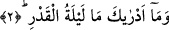
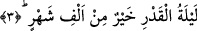

2. Kadir gecesinin ne olduğunu sen bilir misin?
Ey Muhammed! Onun ne olduğunu sana hangi şey bildirdi? Bu sorunun anlamı şudur:
Sen Kadir gecesinin hakikatini bilmezsin. Çünkü onun yüce değeri yaratıkların bilgi
alanlarının dışındadır. Dolayısıyla onlar Kadir gecesinin değerini kavrayamazlar. Bunun
ne olduğunu ve hakikatini ancak gaybın bilgisini elinde bulunduran Allah bilir. Bu ifâde,
Kur’an’ın indiği vakti yüceltmek içindir. Kadir gecesinin faziletlerinden bazıları
şunlardır: Kadir gecesi ölen kimseye kabirde sorgu, sual yoktur. Yine diğer faziletli
vakitlerde ölen kimseler için de kabirlerinde sorgu ve sual yoktur. Bu faziletli
vakitlerden birisi de bayram geceleridir.
Allah Teâlâ’nın kerem’inin gereği şudur ki o gece ölene kabirde sorgu, sual olmadığı
gibi ondan sonra da olmaması gerekir. Fiil tecellisi peygamberlerin seyyidi Efendimiz’e
Receb ayının ilk cuma gecesi akşamla yatsı arasında vuku bulmuştur. Bundan dolayı
Reğaib namazı o esnâda müstehab görülmüştür. Sıfatlar ise Şaban ayının onbeşinde
tecelli etmiştir. Bundan dolayı vitirden önce yatsı namazından sonra beraet namazı
kılmak müstehab görülmüştür. Allah’ın zâtı ise Efendimiz’e Kadir gecesi tecelli
etmiştir. Bunun için o gece kadir gecesi namazı kılınması müstehab görülmüştür.
Bu âyet Allah Teâlâ’nın vaadini ifâde ettiği için Allah, Kadir gecesinin kendisini
beyân buyurmaya başlamıştır.
3. Kadir gecesi, bin aydan hayırlıdır.
“Kadir gecesi”nin ihyâsı ve o gecede yapılan ibâdet “bin aydan daha hayırlıdır.”
Yani içinde Kadir gecesi olmayan gecelerde kılınan namaz ve oruçlardan daha
hayırlıdır. “İçinde Kadir gecesi olmayan” dememizin nedeni bir şeyin yine kendisi
üzerine mukayesesi ve üstün tutulması durumu olmasın diyedir. Âyette yer alan “hayrun”
ifâdesi daha üstün, daha faziletli, değeri daha büyük, ecri ve sevabı daha çok demektir.
Bin aylık süre seksen üç sene, dört aylık süreye tekabül etmektedir.
Bir hadis-i şerifte Peygamber Efendimiz (s.a.) şöyle buyurur: “Her kim inanarak ve
sevabını Allah’tan bekleyerek Kadir gecesini ihyâ ederse geçmiş ve gelecek günahları
bağışlanır. Her kim îman ederek ve sevabını Allah’tan bekleyerek oruç tutacak olursa
geçmiş ve gelecek günahları bağışlanır” [175] buyurulmuştur. Nitekim Keşfu’l-esrar’da
bu şekilde kayıtlıdır.
Hattabi hadiste geçen “îmanen ve ihtisaben” ifâdelerini şöyle açıklar: Niyet ederek